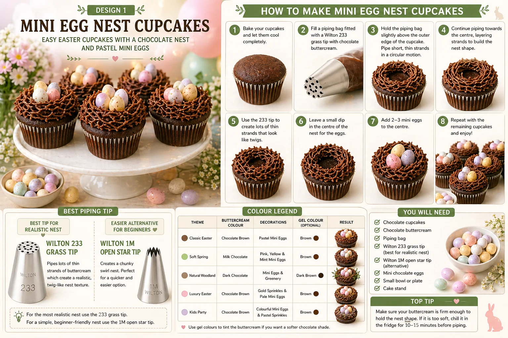
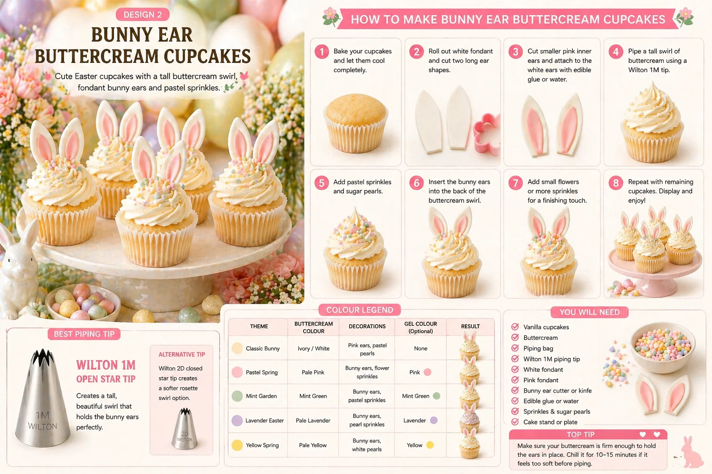

Easter cupcakes are a lovely way to bring soft colour, texture and spring detail to a party table. Whether you are planning an Easter lunch, a children's party, a school celebration or a spring-themed family gathering, cupcakes can help make the table feel more styled and complete.
This guide covers two easy Easter cupcake designs that work beautifully as a pair:
- Mini Egg Nest Cupcakes
- Bunny Ear Buttercream Cupcakes
Both designs are beginner-friendly, colourful and perfect for a coordinated spring dessert table.
At Little Moment Studio, our focus is balloon styling and celebration setups, but we know the most beautiful celebrations feel coordinated from top to bottom. Balloons, backdrops, cupcakes, cake stands and table details all work together to create the final look.
We do not make cakes or cupcakes ourselves, but these ideas are designed to inspire your Easter dessert table. If you would like cupcakes or a cake to match your balloon display, we are happy to recommend a trusted local cake maker.
Why These Two Designs
These two designs work beautifully together because they give your table a mix of texture, colour and height. The mini egg nests add a recognisable Easter look, while the bunny ear cupcakes add height and softness. Together, they work well with pastel balloons, spring flowers, cake stands and table styling.
| Design | Style | Difficulty | Best For |
|---|---|---|---|
| Mini egg nest cupcake | Chocolate nest with pastel eggs | Easy | Classic Easter detail |
| Bunny ear buttercream cupcake | Tall pastel swirl with fondant ears | Easy | Cute spring party style |
Mini Egg Nest Cupcakes

Mini egg nest cupcakes are one of the easiest Easter designs to recreate. They use chocolate buttercream piped into a nest shape, then finished with pastel mini eggs in the centre. The design is simple, instantly recognisable and ideal for a spring dessert table.
What You Will Need
| Item | Purpose |
|---|---|
| Chocolate cupcakes | Works well with the nest theme |
| Chocolate buttercream | Creates the nest |
| Piping bag | Holds the buttercream |
| Wilton 1M piping tip | Creates the nest swirl |
| Pastel mini chocolate eggs | Main Easter decoration |
| Cake stand | Helps display the finished cupcakes |
Best Piping Tip for Mini Egg Nest Cupcakes
Use a Wilton 1M open star tip. This creates a textured swirl that can be shaped into a nest and gives a neat, repeatable result. It is easier for beginners than using a grass tip and can be piped more quickly.
A Wilton 233 grass tip can also be used if you want a more shredded nest texture, but it takes a little more control and is slower to pipe. For a beginner-friendly result, the Wilton 1M is the better choice.
How to Make Mini Egg Nest Cupcakes
- Bake and cool the cupcakes. Chocolate cupcakes work especially well because they match the nest-style design. Let them cool completely before decorating.
- Prepare the chocolate buttercream. Make a firm chocolate buttercream. It should be soft enough to pipe but firm enough to hold the nest shape. If the buttercream feels too loose, chill it briefly or add a little more icing sugar.
- Fill the piping bag. Fit a piping bag with the Wilton 1M open star tip. Fill with chocolate buttercream, push it down towards the nozzle and twist the top to remove air pockets.
- Pipe the nest shape. Hold the piping bag above the cupcake. Pipe a ring around the outside edge first, then continue around to build a nest shape. Leave a small dip or space in the centre for the mini eggs. The lines do not need to be perfect — a slightly uneven finish makes the nest look more natural.
- Add the mini eggs. Place two or three pastel mini eggs into the centre of the nest. Use soft pastel-coloured eggs for the best spring look.
- Finish the display. Arrange on a cake stand or tray. Scatter a few extra mini eggs around the base for a styled finish.
Colour Ideas for Mini Egg Nest Cupcakes
| Theme | Buttercream | Decorations | Result |
|---|---|---|---|
| Classic Easter Nest | Chocolate brown | Pastel mini eggs | Traditional Easter look |
| Soft Spring | Milk chocolate brown | Pink, yellow and mint mini eggs | Softer pastel finish |
| Natural Woodland | Dark chocolate brown | Mini eggs with greenery and neutral cases | Rustic spring style |
| Luxury Easter | Chocolate brown | Gold sprinkles and pale mini eggs | More premium dessert table look |
| Children's Easter Party | Chocolate brown | Colourful mini eggs and pastel sprinkles | Fun and playful |
Mini Egg Tip
Cadbury Mini Eggs are the most widely available UK option and work well at cupcake scale. For a more premium look, use Lindt or similar foil-wrapped pastel eggs. Avoid very large eggs — they can unbalance the cupcake and make the nest look overcrowded.
Bunny Ear Buttercream Cupcakes

Bunny ear cupcakes are soft, cute and perfect for Easter parties. They use a tall buttercream swirl finished with simple fondant bunny ears and pastel sprinkles. This design is slightly more decorative than the mini egg nest cupcake but still very achievable for beginners.
What You Will Need
| Item | Purpose |
|---|---|
| Vanilla cupcakes | A soft, simple base |
| White or ivory buttercream | Main swirl topping |
| Piping bag | Holds the buttercream |
| Wilton 1M piping tip | Creates the tall swirl |
| White fondant | Makes the bunny ears |
| Pink fondant | Makes the inner ear detail |
| Bunny ear cutter or small knife | Cuts the ear shapes |
| Edible glue or water | Attaches fondant details |
| Pastel sprinkles or sugar pearls | Adds a spring finish |
Best Piping Tip for Bunny Ear Cupcakes
Use a Wilton 1M open star tip. This creates a tall buttercream swirl that gives the bunny ears something to sit behind. The height helps the ears stand up and makes the cupcake look fuller and more party-ready.
A Wilton 2D closed star tip can also be used for a softer rosette-style finish, but the 1M gives better height for holding the ears upright.
How to Make Bunny Ear Buttercream Cupcakes
- Bake and cool the cupcakes. Cool cupcakes completely before decorating. Warm cupcakes can soften the buttercream and make the ears unstable.
- Make the fondant bunny ears. Roll out white fondant to around 2–3mm thick. Cut two ear shapes using a bunny ear cutter, leaf cutter or small knife. Roll out a little pink fondant and cut smaller inner ear shapes. Attach the pink inner ears to the white ears with a tiny amount of edible glue or water. Leave the ears to firm for at least 15–20 minutes before use.
- Prepare the buttercream. Make a firm white or ivory buttercream. Keep it plain or add a tiny amount of pastel colouring for pink, yellow, mint or lilac swirls.
- Fill the piping bag. Fit the Wilton 1M tip and fill the bag with buttercream. Push it down towards the nozzle and twist the top.
- Pipe the swirl. Hold the piping bag upright over the cupcake. Start at the outside edge and pipe around in a circle, working inwards and upwards to a peak at the centre.
- Add sprinkles. Add pastel sprinkles, sugar pearls or small flower sprinkles while the buttercream is still soft. Use a light hand so the cupcake remains delicate.
- Add the bunny ears. Insert the ears gently towards the back of the buttercream swirl. Press them in just enough to hold without flattening the swirl.
- Let the cupcakes firm. Leave for 10–15 minutes before boxing or serving so the buttercream holds its shape and the ears stay secure.
Colour Ideas for Bunny Ear Cupcakes
| Theme | Buttercream | Decorations | Result |
|---|---|---|---|
| Classic Bunny | Ivory or white | Pink bunny ears, pastel pearls | Soft traditional Easter look |
| Pastel Spring | Pale pink | Bunny ears, flower sprinkles, sugar pearls | Pretty spring party style |
| Mint Garden | Mint green | White ears, pastel sprinkles | Fresh garden-inspired look |
| Lavender Easter | Pale lilac | White and pink ears, pearl sprinkles | Soft and delicate |
| Yellow Spring | Pale yellow | Bunny ears, white pearls, tiny flowers | Bright and cheerful |
Fondant Tip
If the fondant sticks when rolling, dust the surface very lightly with cornflour or icing sugar. Use only a small amount — too much will affect the smooth finish of the ears. Letting the ears firm up before inserting them is the most important step for keeping them upright.
Displaying Easter Cupcakes on a Spring Dessert Table
A coordinated Easter dessert table works best with soft colours and natural textures. The two designs contrast well — the nest cupcakes are lower and textured, while the bunny ear cupcakes are taller and more decorative, which creates a pleasing balance of height across the table.
- White or sage cake stands to add height variation
- Spring flowers, eucalyptus or pastel dried botanicals
- Mini eggs scattered around the stands
- Soft green fabric or linen as a table base
- Ceramic bunny decorations or wooden Easter props
- Pale pink, yellow, mint and lilac details throughout
- Ivory or white cupcake cases
A strong Easter palette to work with: ivory, pastel yellow, mint green, blush pink and soft lilac. Choose three or four of these and repeat them across the balloons, cupcakes and table decor.
Suggested Cupcake Box
Box of 12:
| Quantity | Design |
|---|---|
| 6 | Mini egg nest cupcakes |
| 6 | Bunny ear buttercream cupcakes |
Box of 6:
| Quantity | Design |
|---|---|
| 3 | Mini egg nest cupcakes |
| 3 | Bunny ear buttercream cupcakes |
Beginner Tips for Better Results
- Keep your buttercream firm. If the nest or swirl loses shape, chill the buttercream briefly or add a little more icing sugar before continuing.
- Leave space for the mini eggs. When piping the nest, keep a small dip in the centre so the eggs sit neatly in place rather than sliding off.
- Let the fondant ears firm up first. Give them at least 15–20 minutes out of the mould before inserting into the buttercream. Firm ears stay upright.
- Place ears towards the back of the swirl. This creates a more natural look and gives the ear more support from the buttercream height behind them.
- Keep sprinkle details light. A few pastel sprinkles or pearls look more refined than covering the entire cupcake.
- Keep the palette focused. Choose three or four pastel colours and repeat them across both designs for a cohesive table.
- Coordinate the cupcake cases. Pale pink, sage or ivory cases make a noticeable difference to how polished the finished display looks.
Your Questions Answered
Can these cupcakes be made the day before?
Yes. Store them in a covered cupcake box or airtight container in a cool, dry place. Fondant bunny ears are best kept away from humidity. The ears can be made ahead of time and left to firm up — which is actually recommended for the best result.
How do you transport Easter cupcakes?
Use a cupcake box with inserts so nothing moves around. The mini egg nest cupcakes are easier to transport as they are lower. The bunny ear cupcakes are taller — check the box has enough height clearance. If the bunny ears are delicate, add them after transport rather than risk damage on the journey. Keep cupcakes away from heat and direct sunlight.
What if the swirl loses shape?
The buttercream is too soft. Chill it in the bowl for 5–10 minutes, then beat briefly before refilling the piping bag. In a warm kitchen this can happen quickly — work in small batches and chill between sessions if needed.
What if the bunny ears keep falling over?
The ears need longer to firm up, or the buttercream swirl is too soft. Let the ears set for at least 20 minutes before inserting. Make sure the buttercream is firm enough to support them and insert the ears towards the back of the swirl where there is more height.
Useful Tools
- Wilton 1M open star piping tip
- Wilton 2D closed star piping tip (optional for rosette variation)
- Disposable piping bags
- Pastel mini chocolate eggs
- White and pink fondant
- Bunny ear cutter or small sharp knife
- Edible glue
- Pastel sprinkles and sugar pearls
- White or pastel cupcake cases
- Cupcake boxes with inserts
The two designs work well as a pair because they contrast each other in shape and finish. The chocolate nest cupcakes bring an earthy, textured Easter detail, while the tall bunny ear cupcakes add soft height and spring colour. Together they make a dessert table that feels complete and coordinated without requiring a full day of preparation.
For Easter balloon styling inspiration, see our guide to Easter balloon ideas. For ideas on matching your cupcakes with your balloon display, see our guide to how to match cupcakes with your balloon display.
For more dessert table inspiration, see our guides to fondant cupcake ideas and baby shower cupcake ideas.
Planning an Easter Celebration in Sittingbourne or Kent?
Little Moment Studio can help you create a coordinated balloon display, backdrop and colour palette for your spring celebration. We can also recommend a trusted local cake maker if you would like cupcakes or a cake to complement your dessert table.